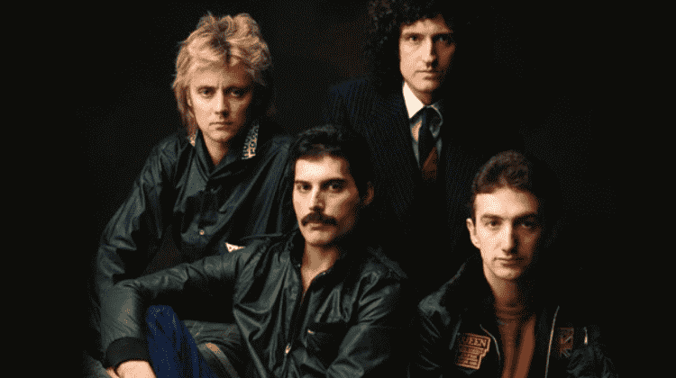

A história do Queen
Queen é uma banda britânica de rock formada em Londres, em 1970. O grupo conquistou fãs no mundo inteiro graças à sua criatividade, às suas músicas e às apresentações marcantes.
Freddie Mercury ficou conhecido por sua voz marcante e sua presença de palco. A banda também se destacou pela combinação de diferentes estilos musicais e pela originalidade de suas composições.
Os integrantes da banda

A formação clássica do Queen era composta por quatro músicos que contribuíram para criar o som característico da banda.
- Freddie Mercury: vocalista e pianista.
- Brian May: guitarrista e vocalista.
- Roger Taylor: baterista e vocalista.
- John Deacon: baixista.
Músicas famosas do Queen
O Queen lançou músicas que continuam populares entre diferentes gerações. Suas canções são conhecidas pela criatividade, pelos refrões marcantes e pela energia do rock.
Algumas das músicas mais conhecidas
- Bohemian Rhapsody
- We Will Rock You
- We Are the Champions
- Don't Stop Me Now
- Another One Bites the Dust
Bohemian Rhapsody, lançada em 1975, é uma das canções mais conhecidas da banda. Ela combina rock, harmonias vocais e elementos operísticos.
Vídeo musical
Assista ao videoclipe de uma das músicas mais famosas da banda.
Conheça mais sobre o Queen
Visite o site oficial do Queen para encontrar mais informações sobre a banda.
Confira também o canal oficial do Queen no YouTube para assistir a outros vídeos.